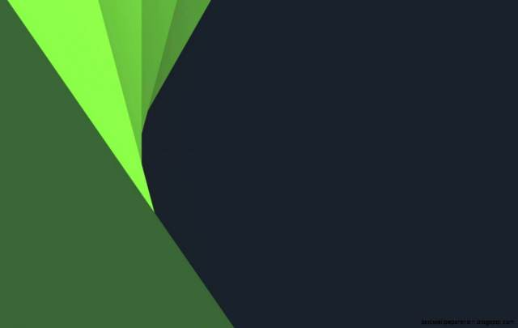

<!--
  Generated template for the SidebarPage page.

  See http://ionicframework.com/docs/components/#navigation for more info on
  Ionic pages and navigation.
-->


<ion-menu [content]="content">
  <!--<ion-header no-border>  
    
  </ion-header>-->
  <ion-header class="card-background-page">
    <ion-card>
      
      <div class="card-title">username</div>
      <div class="card-subtitle">email@email.com</div>
    </ion-card>
  </ion-header>
  <ion-content>
    <ion-list>
      <button ion-item *ngFor="let page of pages" (click)="setPage(page.component)" menuClose >
        <ion-icon item-left name="{{page.icon}}" color="green"></ion-icon>
        {{page.title}}
      </button>
    </ion-list>
  </ion-content>
</ion-menu>

<ion-nav #content [root]="home"></ion-nav>
